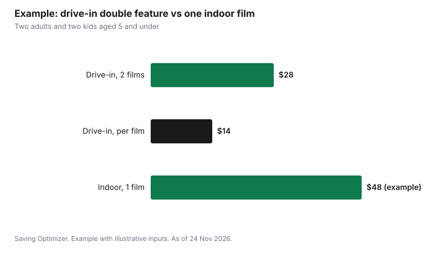

Entertainment · Canada
Drive-In Theatres in Canada: What It Costs

A drive-in movie in Canada usually costs less per film than an indoor cinema, because many drive-ins show a double feature for one admission. Premier Theatres' 5 Drive-In in Oakville and Starlite drive-in near Hamilton list $14 for a single adult, $42 for three adults and $56 for four, with children 5 and under free. Drive-ins are seasonal, so check opening dates, and plan the car: battery, radio and a clean windshield matter.
Key takeaways
- Ontario examples, checked 24 Nov 2026: 5 Drive-In and Starlite list $14 for a single adult, $42 for 3 adults, $56 for 4 adults; children 5 and under free.
- Single parent pricing: $19 for 1 adult and 1 kid aged 6 to 12, $24 with 2 kids.
- Many drive-ins show double features, which cuts the cost per film.
- Drive-ins are seasonal, roughly spring to fall. Check opening dates on the theatre's site.
- Example: a family of two adults and two kids aged 5 and under sees two films for $28, or $14 per film, compared with an example $48 for one indoor film.
Locations
Canada still has drive-ins in most provinces, mostly in smaller cities and on the edges of large ones. Ontario has several, including the 5 Drive-In in Oakville and the Starlite in Stoney Creek, both run by Premier Theatres. Many are family-run, cash-friendly and open only on weekends in spring and fall. Search your province's tourism site or the theatre's own page; don't rely on old listings, because drive-ins open and close.
Prices
| Ticket | Price | Notes |
|---|---|---|
| Single adult (13+) | $14 | One car |
| 3 adults | $42 | $14 each |
| 4 adults | $56 | $14 each |
| Single parent, 1 kid | $19 | 1 adult and 1 kid aged 6 to 12 |
| Single parent, 2 kids | $24 | 1 adult and 2 kids aged 6 to 12 |
| Children 5 and under | Free | With paying adult |
Other drive-ins price by carload or per person; check before you pick who comes. Debit, credit and cash were accepted at the Premier drive-ins on 24 Nov 2026.
Car tips
- Sound comes through an FM radio frequency. If your car's radio drains the battery, bring a portable FM radio.
- Turn off automatic headlights and daytime running lights if you can; check your car's manual.
- Bring jumper cables or a booster pack. A dead battery after a double feature is common.
- Clean the windshield inside and out before you go.
- Bring blankets, pillows and bug spray. Park larger vehicles where the theatre asks.
Snacks
Drive-in snack bars are a major part of the business, and policies on outside food vary. Some allow it, some charge an outside food fee, and some ban it. Check the theatre's rules page. If outside food is banned, eat dinner before you go and buy one shared snack at the stand.
Plan: an example family night
An example family has two adults and two kids aged 4 and 5. They compare a drive-in double feature with one indoor film at example indoor prices of $14 an adult and $10 a child.

Drive-in: 2 adults × $14 = $28 for two films; the kids are free. Indoor: 2 × $14 + 2 × $10 = $48 for one film. Per film, the drive-in costs $14 versus $48 indoors. Add the same $20 of snacks to both and the drive-in is still far cheaper. Other ideas for cheap family nights are in movie and game night at home.
Sources
- Premier Theatres, 5 Drive-In and Starlite price pages (premiertheatres.ca/5drivein/price, /starlite/price; adult 13+, kid 6 to 12, child 5 and under; $14 single adult; single parent $19 with 1 kid, $24 with 2 kids; debit, credit and cash), checked 24 Nov 2026.
- The Starlite / 5 Drive-In film pages (5 Drive-In, 2332 9th Line, Oakville; Starlite, 59 Green Mountain Rd. E., Stoney Creek; $14, $42, $56; children 5 and under free), checked 24 Nov 2026.
Frequently asked questions
How much does a drive-in movie cost in Ontario?
At the 5 Drive-In in Oakville and the Starlite near Hamilton, a single adult was $14, three adults $42 and four adults $56 when checked on 24 Nov 2026. Children 5 and under were free.
Do drive-ins show two movies?
Many do. A double feature for one admission is common and makes the drive-in cheaper per film than an indoor cinema.
Can you bring your own food to a drive-in?
It depends on the theatre. Some allow outside food, some charge a fee, and some don't allow it. Check the theatre's rules before you go.
Will my car battery die at a drive-in?
It can, if the radio and lights run for hours. Use a portable FM radio if you can, turn off automatic lights where possible, and bring jumper cables or a booster pack.
When are drive-ins open in Canada?
Most are seasonal, roughly spring to fall, and some open only on weekends in shoulder seasons. Check the theatre's website for dates.
Researched and drafted with AI assistance and fact-checked against official Canadian sources. How we create content.
Note: Prices, seasons and food rules vary by drive-in. Check the theatre's site before you go. Education only.